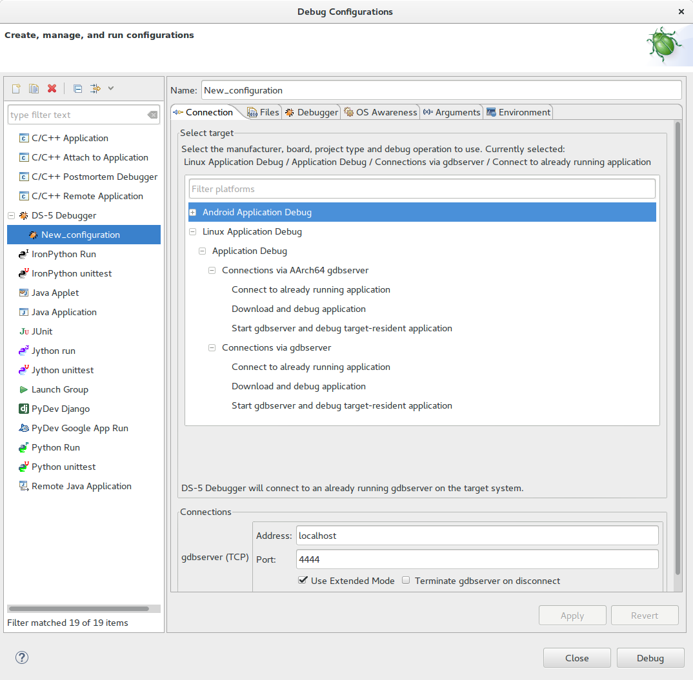
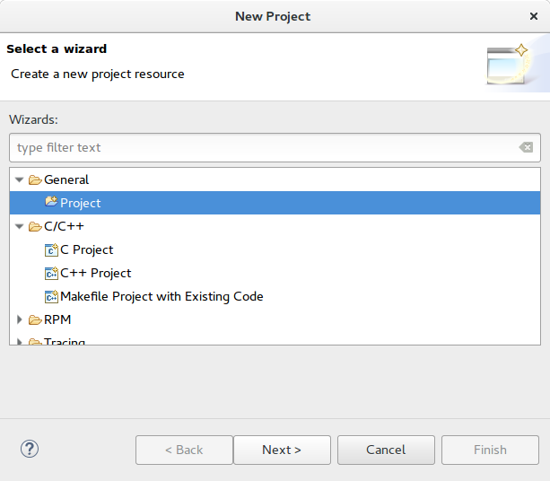
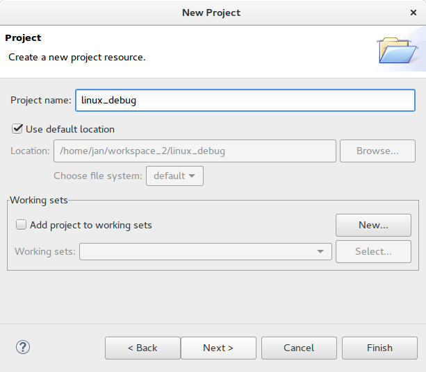
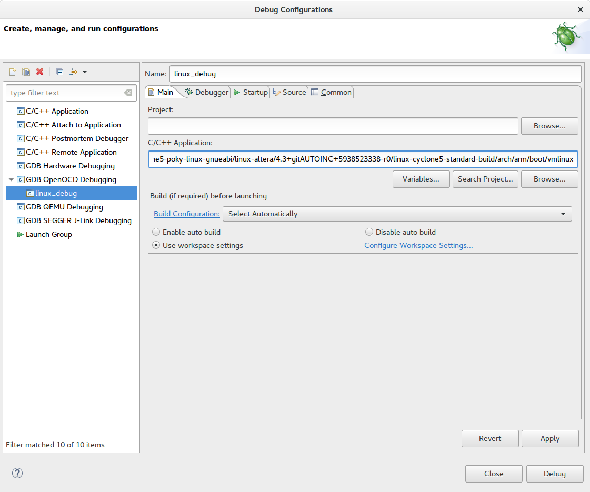
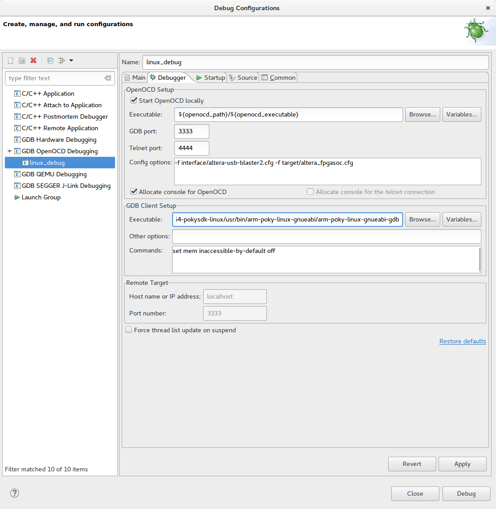
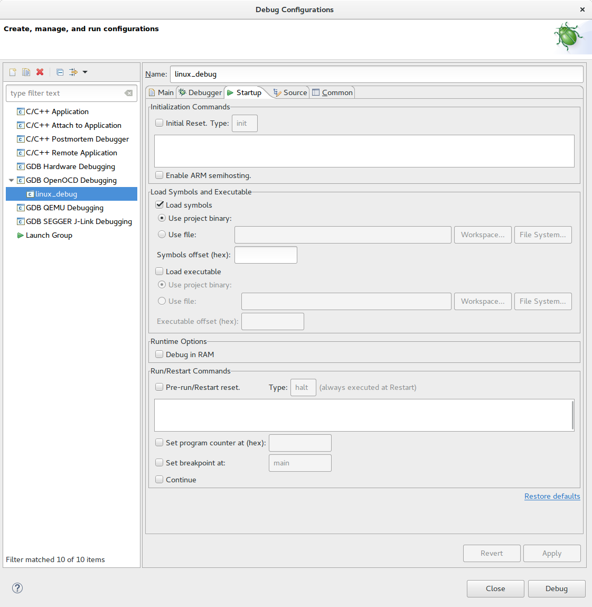
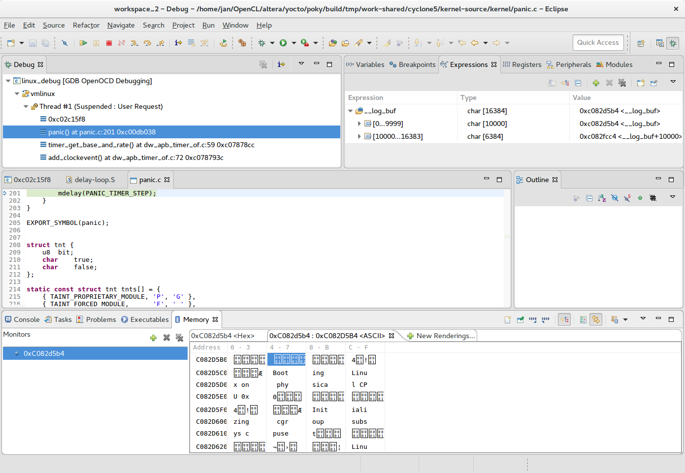

This blog post will show you how one can use the OpenOCD debugger with Altera Cyclone V SoC. Altera Cyclone V SoC is a very interesting integrated circuit, combining dual-core ARM processor and a decent FPGA, allowing a wide variety of possibilities to partition the application between the two.
Xilinx offers Xilinx SDK as the tool to program and debug their MicroBlaze soft-core and ARM cores in their Zynq FPGAs. Altera on the other hand has two different tools to program and debug their portfolio of processors. There is Nios II EDS which provides support for Nios soft-core processor and there is ARM DS-5 Development Studio, which provides support for ARM cores in Altera SoCs. While I believe DS-5 can be useful tool, unfortunately the free-as-a-beer DS-5 Community Edition only allows debugging Linux user-space applications. In order to use it, the Linux should be up and running in order to run gdbserver on processor.

When doing initial bring-up or experimenting this may not be the case. If there is something wrong with a kernel, a device tree or the drivers, one can easily find himself with a non-responsive system. Even in this case the JTAG debugger offers a side-door access to the system. This greatly simplifies determining the cause which lead to the system halt.
Installation of OpenOCD
OpenOCD
OpenOCD is a free and open-source on-chip debugger. It provides a link between hardware components and a command line interface, which can be used to control and monitor the hardware over JTAG interface. It can also be interfaced with GDB (GNU Debugger) integrated with Eclipse, to provide a graphical way to debug programs. If you want to know more, at the bottom of OpenOCD Documentation page is a link to the presentation on FOSDEM 2006.
First we need to install all needed tools:
sudo apt-get install libtool autotools-dev automake libusb-1.0 libhidapi-dev pkg-config git
Then we get the source code from OpenOCD SourceForge repository. I have used the
latest available commit in master, which was the one with a git tree-ish value
of 12ff09f:
git clone git://git.code.sf.net/p/openocd/code openocd-code
root@eee2f562f8f2:/openocd-code2# git show HEAD
commit 12ff09f7f27a707fe42226262f55b8ce8351cbf9
Author: Esben Haabendal <esben@haabendal.dk>
Date: Fri Nov 27 09:13:36 2015 +0100
cfi: Add support for strangely endianness broken SoC implementations
Perform all needed steps to compile the code (have a look in INSTALL for
detailed instructions):
cd openocd-code
aclocal
./bootstrap
At the end of configure step make sure that support for Altera USB-Blaster II and CMSIS-DAP Debugger are configured. The output should look something like this:
./configure
...
OpenOCD configuration summary
--------------------------------------------------
MPSSE mode of FTDI based devices yes (auto)
Segger J-Link JTAG Programmer yes (auto)
ST-Link JTAG Programmer yes (auto)
TI ICDI JTAG Programmer yes (auto)
Keil ULINK JTAG Programmer yes (auto)
Altera USB-Blaster II Compatible yes (auto)
Versaloon-Link JTAG Programmer yes (auto)
OSBDM (JTAG only) Programmer yes (auto)
eStick/opendous JTAG Programmer yes (auto)
Andes JTAG Programmer yes (auto)
USBProg JTAG Programmer no
Raisonance RLink JTAG Programmer no
Olimex ARM-JTAG-EW Programmer no
CMSIS-DAP Compliant Debugger yes (auto)
Then we just need to compile everything and install the openocd binary.
make
sudo make install
udev rules for USB-Blaster
After the OpenOCD is installed, we must take care to set the correct udev
rules (access permisions for USB device). As a workaround I have been chmod-ing
the /dev/bus/usb/002/ folder to 0666 and that gave me correct permission
to use the USB-Blaster from Altera Quartus software.
The more elegant solution is described in the comment section of ALTERA USB-BLASTER WITH UBUNTU 14.04. The USB-Blaster has multiple personalities (one for FPGA JTAG and one for ARM JTAG), the udev rule therefore needs to specify both 6010 and 6810 as the targeted devices.
Create /etc/udev/rules.d/51-usbblaster.rules with the following content:
# For Altera USB-Blaster on SoCkit
SUBSYSTEM=="usb",\
ENV{DEVTYPE}=="usb_device",\
ATTR{idVendor}=="09fb",\
ATTR{idProduct}=="6010|6810",\
MODE="0666",\
NAME="bus/usb/$env{BUSNUM}/$env{DEVNUM}",\
RUN+="/bin/chmod 0666 %c"
udev rules should be reloaded with the following command to take effect
immediately:
sudo udevadm control --reload
First checks
Now we can try running Altera jtagconfig program to check if the permissions
are OK. When the SoCkit board is attached, the output should look something
like this:
➜ ~ ~/altera/16.0/quartus/bin/jtagconfig
1) CV SoCKit [1-1.1]
02D020DD 5CSEBA6(.|ES)/5CSEMA6/..
4BA00477 SOCVHPS
Now we can also try running OpenOCD:
➜ ~ openocd -f interface/altera-usb-blaster2.cfg -f target/altera_fpgasoc.cfg
Open On-Chip Debugger 0.10.0-dev-00324-g12ff09f (2016-06-26-19:19)
Licensed under GNU GPL v2
For bug reports, read
http://openocd.org/doc/doxygen/bugs.html
Warn : Adapter driver 'usb_blaster' did not declare which transports it allows; assuming legacy JTAG-only
Info : only one transport option; autoselect 'jtag'
adapter speed: 1000 kHz
cycv_dbginit
Info : Altera USB-Blaster II (uninitialized) found
Info : Loading firmware...
Info : Waiting for renumerate...
Info : Waiting for renumerate...
Info : Altera USB-Blaster II found (Firm. rev. = 1.36)
Info : This adapter doesn't support configurable speed
Info : JTAG tap: fpgasoc.dap tap/device found: 0x4ba00477 (mfg: 0x23b (ARM Ltd.), part: 0xba00, ver: 0x4)
Info : JTAG tap: fpgasoc.fpga.tap tap/device found: 0x02d020dd (mfg: 0x06e (Altera), part: 0x2d02, ver: 0x0)
Info : DAP transaction stalled (WAIT) - slowing down
Info : DAP transaction stalled (WAIT) - slowing down
Info : DAP transaction stalled (WAIT) - slowing down
Info : fpgasoc.cpu.0: hardware has 6 breakpoints, 4 watchpoints
This gives us information that ARM core was recognized, this is therefore the correct command to use it later with the GDB debugger.
Eclipse plug-in
Now we just have to set-up the Eclipse with the OpenOCD plug-in. I have used the newest version of Eclipse available at the moment, Eclipse Neon.
This page describes how to install the OpenOCD plug-in for Eclipse, the easiest way is to drag and drop install icon into a running instance of Eclipse.
Once this is set, we can create a new project. For simpler (bare-metal) project it would probably make sense to go with "Makefile Project with Existing Code". For a Linux kernel debugging the plain Project will be enough.


Now let's find the original Linux binary. When building kernel with Yocto, the
created file in deploy directory is zimage file. This is a compressed image
with all debugging symbols stripped out. It is optimized to be used in
embedded environment. We need to find the original vmlinux image before the
debugging symbols were stripped out:
➜ tmp git:(jethro) find . -name vmlinux
./work/cyclone5-poky-linux-gnueabi/linux-altera/4.3+gitAUTOINC+5938523338-r0/
linux-cyclone5-standard-build/arch/arm/boot/vmlinux
./work/cyclone5-poky-linux-gnueabi/linux-altera/4.3+gitAUTOINC+5938523338-r0/
linux-cyclone5-standard-build/arch/arm/boot/compressed/vmlinux
./work/cyclone5-poky-linux-gnueabi/linux-altera/4.3+gitAUTOINC+5938523338-r0/
linux-cyclone5-standard-build/vmlinux
./work/cyclone5-poky-linux-gnueabi/linux-altera/4.4+gitAUTOINC+969478b841-r0/
linux-cyclone5-standard-build/arch/arm/boot/vmlinux
./work/cyclone5-poky-linux-gnueabi/linux-altera/4.4+gitAUTOINC+969478b841-r0/
linux-cyclone5-standard-build/arch/arm/boot/compressed/vmlinux
./work/cyclone5-poky-linux-gnueabi/linux-altera/4.4+gitAUTOINC+969478b841-r0/
linux-cyclone5-standard-build/vmlinux
There are various images from various different runs (and different versions of the kernel).
In Eclipse we then select: Run -> Debug Configurations...
And then we just need to setup the correct parameters for debug. Under "Main tab" we need to select the right Linux binary image:

Under "Debugger tab" we need to set-up the OpenOCD setting and use the correct gdb (the one produced by Yocto):

If we want to attach to a running kernel, we should un-check "Inital Reset" and "Load executable" fields under "Startup tab".

And we are good to go. After pressing the "Debug" button, the debugging
perspective will show up. Now we can access __log_buf buffer to determine
what is stopping the kernel boot.
